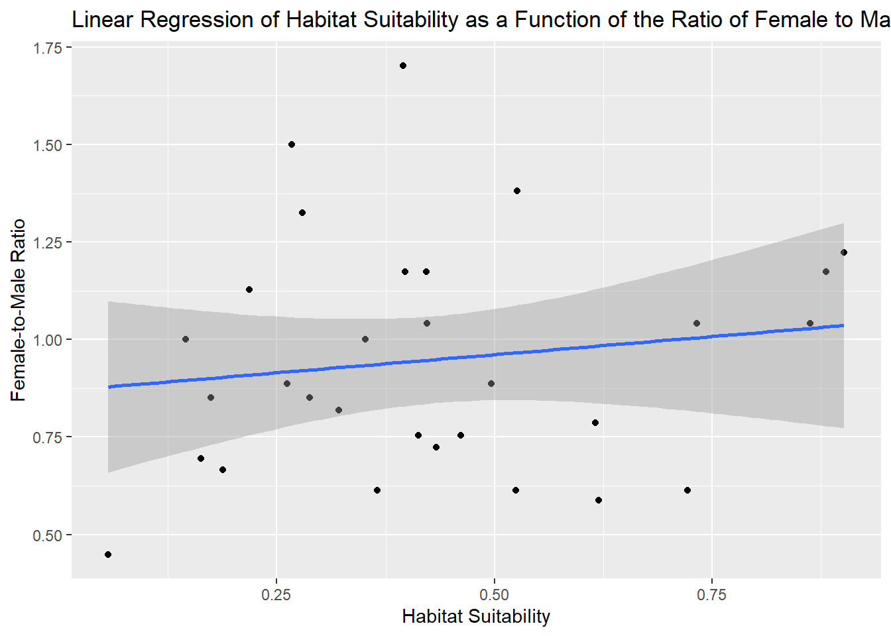
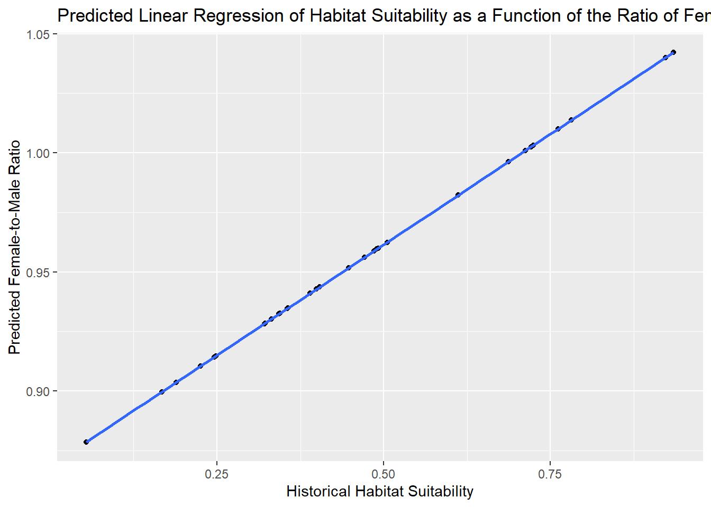
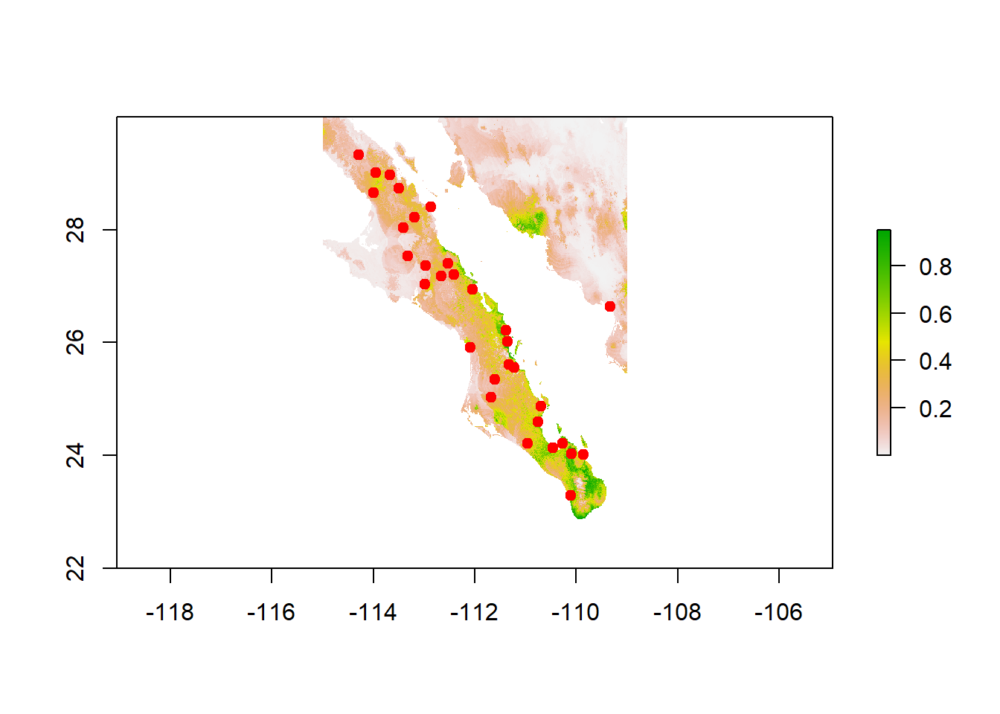
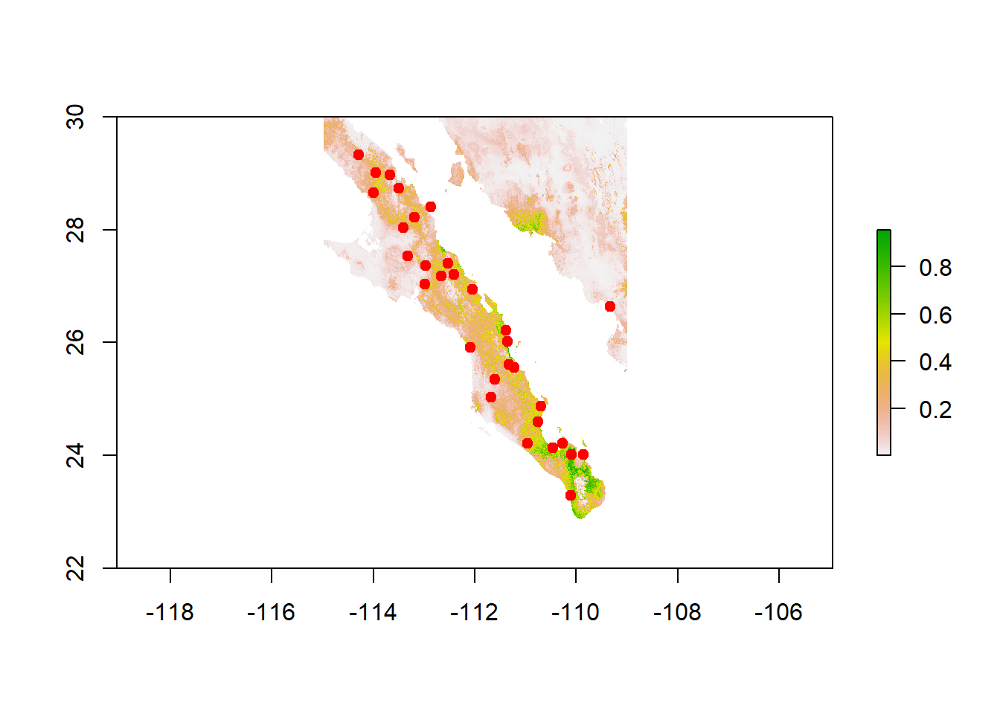

Nowak 543 Final
Overall Motivation
Determine the extent to which changing climate may have impacted sex ratio divergence among locations in the Sonora Desert bark beetle, Araptus attenuatus.
Methods
To determine the the impacts of a changing climate on the the sex ratio of Araptus attenuatus one must first answer a series of smaller questions analysis known modern samples and changes to the sample site between time periods. Data used to analyse these relationships will be modern information on habitat suitability in the sample area, samples of the current beetle population detailing the sex counts and phenotype at study sites, and information about habitat suitability at the last glacial maximum ~20,000 years ago.
Firstly the sample data must be structured to contain information on sex ratio by site rather than the given count values for sex female and sex male. A chi squared test can then be run to determine if the sex ratio is significantly variable by site. Sex ratio data can also determine which site specifically have a female to male ratio which differs from the expected 1:1 ratio.
Once the sex ratio by site has been explored, is can be determined if there is a functional relationship between the habitat suitability at the sampling locations and the sex ratio. This will be done by cross referring the sample point locations with habitat suitability information in a raster form. Raster information for each point will allow the creation of a table containing habitat suitability and sex ratio by site. A linear regression for the relationship between habitat suitability and female to male ratio can the be created to find the extent to which habitat suitability can explain variation in sex ratios.
It is important to find an accurate model which explains sex ratio using modern data so that habitat suitability from the last glacial maximum can be run through the most effective model available. A more complicated model can be created using the inclusion of data Phenotype A and Phenotype B at modern sites. This more complex model can be summarized to determine if it or the previously created model can better explain variation in sex ratios.
Sample points can now be plotted onto raster data containing habitat suitability information from approximately 20 thousand years ago. Using the identified model a sex ratio for each site can be predicted by the habitat suitability value. The average change in sex ratio and changes in sex ratio per sample site between the last glacial maximum and contemporary samples can then be determined.
Results
The following bar graph is a visualization of the ratio of female to male beetles at each sample.
Sex count information can be used to determine sex ratio by site, as detailed in the following table.
| Site | Female_Count | Male_Count | Female_to_Male_Ratio |
|---|---|---|---|
| Site 1 | 54 | 46 | 1.1739130 |
| Site 10 | 40 | 60 | 0.6666667 |
| Site 11 | 44 | 56 | 0.7857143 |
| Site 12 | 46 | 54 | 0.8518519 |
| Site 13 | 43 | 57 | 0.7543860 |
| Site 14 | 60 | 40 | 1.5000000 |
| Site 15 | 55 | 45 | 1.2222222 |
| Site 16 | 47 | 53 | 0.8867925 |
| Site 17 | 38 | 62 | 0.6129032 |
| Site 18 | 31 | 69 | 0.4492754 |
| Site 19 | 53 | 47 | 1.1276596 |
| Site 2 | 41 | 59 | 0.6949153 |
| Site 20 | 38 | 62 | 0.6129032 |
| Site 21 | 37 | 63 | 0.5873016 |
| Site 22 | 43 | 57 | 0.7543860 |
| Site 23 | 50 | 50 | 1.0000000 |
| Site 24 | 46 | 54 | 0.8518519 |
| Site 25 | 50 | 50 | 1.0000000 |
| Site 26 | 51 | 49 | 1.0408163 |
| Site 27 | 54 | 46 | 1.1739130 |
| Site 28 | 48 | 52 | 0.9230769 |
| Site 29 | 38 | 62 | 0.6129032 |
| Site 3 | 42 | 58 | 0.7241379 |
| Site 30 | 51 | 49 | 1.0408163 |
| Site 31 | 57 | 43 | 1.3255814 |
| Site 4 | 54 | 46 | 1.1739130 |
| Site 5 | 51 | 49 | 1.0408163 |
| Site 6 | 58 | 42 | 1.3809524 |
| Site 7 | 45 | 55 | 0.8181818 |
| Site 8 | 47 | 53 | 0.8867925 |
| Site 9 | 63 | 37 | 1.7027027 |
We can conclude from the calulated sex ratios that the following sites have a value greater than 1 and therefore have more females of the species.
| Site | Female_Count | Male_Count | Female_to_Male_Ratio |
|---|---|---|---|
| Site 1 | 54 | 46 | 1.173913 |
| Site 14 | 60 | 40 | 1.500000 |
| Site 15 | 55 | 45 | 1.222222 |
| Site 19 | 53 | 47 | 1.127660 |
| Site 26 | 51 | 49 | 1.040816 |
| Site 27 | 54 | 46 | 1.173913 |
| Site 30 | 51 | 49 | 1.040816 |
| Site 31 | 57 | 43 | 1.325581 |
| Site 4 | 54 | 46 | 1.173913 |
| Site 5 | 51 | 49 | 1.040816 |
| Site 6 | 58 | 42 | 1.380952 |
| Site 9 | 63 | 37 | 1.702703 |
Similarly we can conclude from the calulated sex ratios that the following sites have a value less than 1 and therefore have more males of the species.
| Site | Female_Count | Male_Count | Female_to_Male_Ratio |
|---|---|---|---|
| Site 10 | 40 | 60 | 0.6666667 |
| Site 11 | 44 | 56 | 0.7857143 |
| Site 12 | 46 | 54 | 0.8518519 |
| Site 13 | 43 | 57 | 0.7543860 |
| Site 16 | 47 | 53 | 0.8867925 |
| Site 17 | 38 | 62 | 0.6129032 |
| Site 18 | 31 | 69 | 0.4492754 |
| Site 2 | 41 | 59 | 0.6949153 |
| Site 20 | 38 | 62 | 0.6129032 |
| Site 21 | 37 | 63 | 0.5873016 |
| Site 22 | 43 | 57 | 0.7543860 |
| Site 24 | 46 | 54 | 0.8518519 |
| Site 28 | 48 | 52 | 0.9230769 |
| Site 29 | 38 | 62 | 0.6129032 |
| Site 3 | 42 | 58 | 0.7241379 |
| Site 7 | 45 | 55 | 0.8181818 |
| Site 8 | 47 | 53 | 0.8867925 |
A Chi Squared test is run to evaluate if there is a statistically significant difference from the standard 1:1 sex ratio and sampled sex ratios. The test produces a p-value = 7.968e-05, this is less than 0.05 so it is considered a significant result and reject the null hypothesis that there is no difference in sex ratio by site.
We can conclude that sex ratio at tested sites is significantly different from an even 1:1 ratio.
The following table details habitat suitability and sex ratio by sample site.
| Site | Female_to_Male_Ratio | Habitat_Suitability |
|---|---|---|
| Site 1 | 1.1739130 | 0.8810290 |
| Site 10 | 0.6666667 | 0.1879650 |
| Site 11 | 0.7857143 | 0.6163620 |
| Site 12 | 0.8518519 | 0.2876230 |
| Site 13 | 0.7543860 | 0.4613570 |
| Site 14 | 1.5000000 | 0.2673030 |
| Site 15 | 1.2222222 | 0.9018780 |
| Site 16 | 0.8867925 | 0.4964650 |
| Site 17 | 0.6129032 | 0.5242670 |
| Site 18 | 0.4492754 | 0.0562845 |
| Site 19 | 1.1276596 | 0.2185940 |
| Site 2 | 0.6949153 | 0.1627240 |
| Site 20 | 0.6129032 | 0.3651910 |
| Site 21 | 0.5873016 | 0.6195190 |
| Site 22 | 0.7543860 | 0.4125120 |
| Site 23 | 1.0000000 | 0.3519050 |
| Site 24 | 0.8518519 | 0.1744380 |
| Site 25 | 1.0000000 | 0.1455230 |
| Site 26 | 1.0408163 | 0.8625610 |
| Site 27 | 1.1739130 | 0.4214400 |
| Site 28 | 0.9230769 | NA |
| Site 29 | 0.6129032 | 0.7217000 |
| Site 3 | 0.7241379 | 0.4328730 |
| Site 30 | 1.0408163 | 0.4226090 |
| Site 31 | 1.3255814 | 0.2791050 |
| Site 4 | 1.1739130 | 0.3975000 |
| Site 5 | 1.0408163 | 0.7324870 |
| Site 6 | 1.3809524 | 0.5264130 |
| Site 7 | 0.8181818 | 0.3210530 |
| Site 8 | 0.8867925 | 0.2617900 |
| Site 9 | 1.7027027 | 0.3953470 |
The graph below is a linear regression for the relationship between habitat suitability and female to male ratio. The blue line represents the created model.
`geom_smooth()` using formula = 'y ~ x'
The model above produces a p-value of 0.073, which is less than 0.1 and suggests a potential relationship but not a very significant relationship. A low R-squared value of 0.1103 suggests that habitat suitability alone might not be the primary driver of sex ratio variation and indicates that only ~11% of the variation in the female-to-male ratio can be explained by habitat suitability.
The inclusion of Phenotype A and Phenotype B information improves the functional relationship over habitat suitability alone.

Habitat_Suitability Glacier difference
1 0.8810290 0.9227720 -0.041742980
2 0.1879650 0.1890130 -0.001047999
3 0.6163620 0.6118770 0.004484951
4 0.2876230 0.2251980 0.062424988
5 0.4613570 0.3898320 0.071525007
6 0.2673030 0.5051860 -0.237883031
7 0.9018780 0.9347510 -0.032872975
8 0.4964650 0.4916560 0.004808992
9 0.5242670 0.3556450 0.168622017
10 0.0562845 0.0541657 0.002118800
11 0.2185940 0.1673550 0.051238999
12 0.1627240 0.4716300 -0.308906004
13 0.3651910 0.3316630 0.033528000
14 0.6195190 0.6867450 -0.067225993
15 0.4125120 0.4853990 -0.072887003
16 0.3519050 0.2463260 0.105578989
17 0.1744380 0.3211760 -0.146737993
18 0.1455230 0.4471890 -0.301666006
19 0.8625610 0.7814810 0.081079960
20 0.4214400 0.3992860 0.022154003
21 NA 0.7124060 NA
22 0.7217000 0.7615080 -0.039807975
23 0.4328730 0.4039260 0.028946996
24 0.4226090 0.7239640 -0.301354975
25 0.2791050 0.3565710 -0.077465981
26 0.3975000 0.3218530 0.075646996
27 0.7324870 0.7211120 0.011375010
28 0.5264130 0.4898480 0.036565036
29 0.3210530 0.2485630 0.072489992
30 0.2617900 0.3431230 -0.081332982
31 0.3953470 0.3444950 0.050852001[1] -0.02758304`geom_smooth()` using formula = 'y ~ x'
[1] 1.0400289 0.9036484 0.9822443 0.9103740 0.9409738 0.9624141 1.0422554
[8] 0.9598993 0.9346196 0.8785850 0.8996230 0.9561772 0.9301622 0.9961596
[15] 0.9587364 0.9143009 0.9282130 0.9516345 1.0137678 0.9427309 1.0009291
[22] 1.0100555 0.9435934 1.0030774 0.9347917 0.9283388 1.0025473 0.9595633
[29] 0.9147167 0.9322922 0.9325472 Site Habitat_Suitability Predicted_Sex_Ratio
1 Site 1 0.8810290 1.0400289
2 Site 10 0.1879650 0.9036484
3 Site 11 0.6163620 0.9822443
4 Site 12 0.2876230 0.9103740
5 Site 13 0.4613570 0.9409738
6 Site 14 0.2673030 0.9624141
7 Site 15 0.9018780 1.0422554
8 Site 16 0.4964650 0.9598993
9 Site 17 0.5242670 0.9346196
10 Site 18 0.0562845 0.8785850
11 Site 19 0.2185940 0.8996230
12 Site 2 0.1627240 0.9561772
13 Site 20 0.3651910 0.9301622
14 Site 21 0.6195190 0.9961596
15 Site 22 0.4125120 0.9587364
16 Site 23 0.3519050 0.9143009
17 Site 24 0.1744380 0.9282130
18 Site 25 0.1455230 0.9516345
19 Site 26 0.8625610 1.0137678
20 Site 27 0.4214400 0.9427309
21 Site 28 NA 1.0009291
22 Site 29 0.7217000 1.0100555
23 Site 3 0.4328730 0.9435934
24 Site 30 0.4226090 1.0030774
25 Site 31 0.2791050 0.9347917
26 Site 4 0.3975000 0.9283388
27 Site 5 0.7324870 1.0025473
28 Site 6 0.5264130 0.9595633
29 Site 7 0.3210530 0.9147167
30 Site 8 0.2617900 0.9322922
31 Site 9 0.3953470 0.9325472
